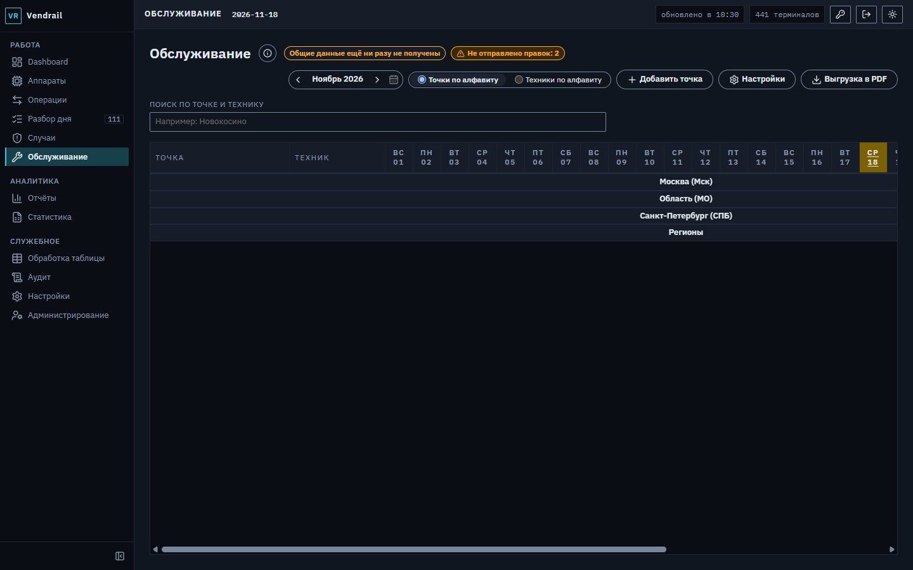
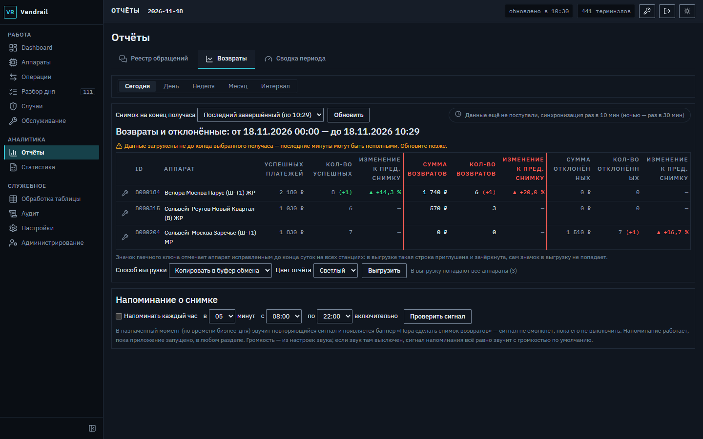
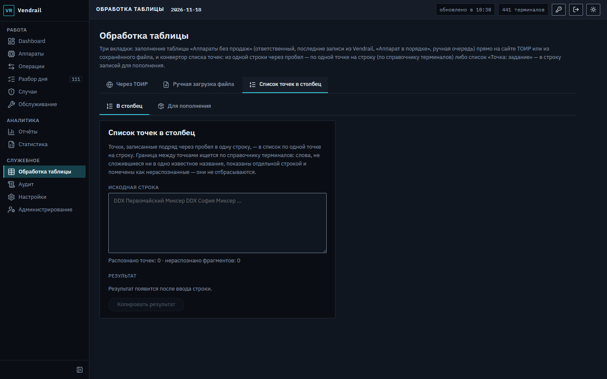
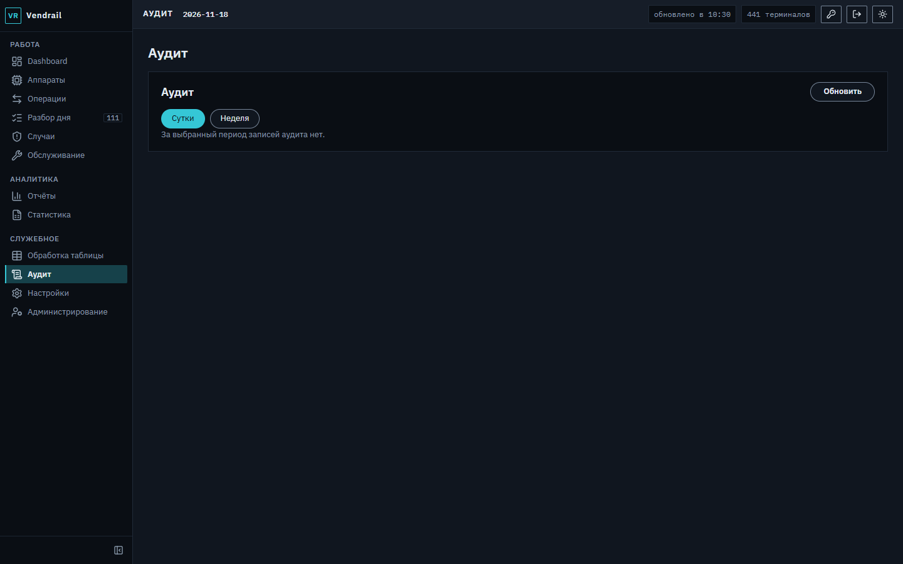
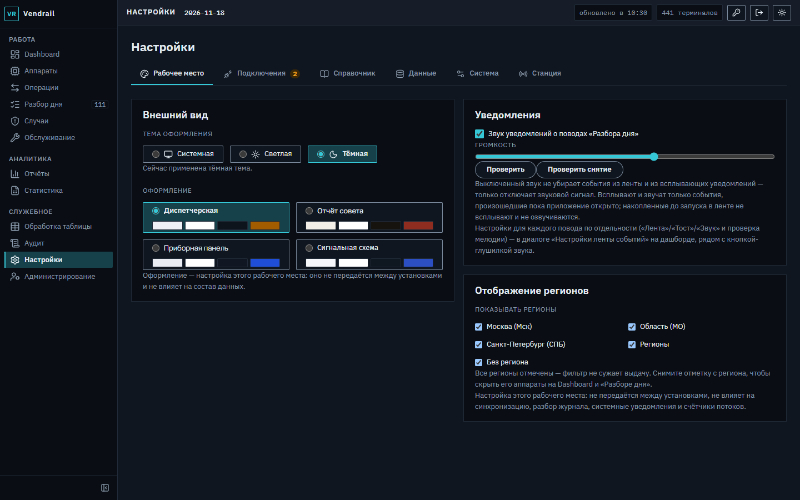
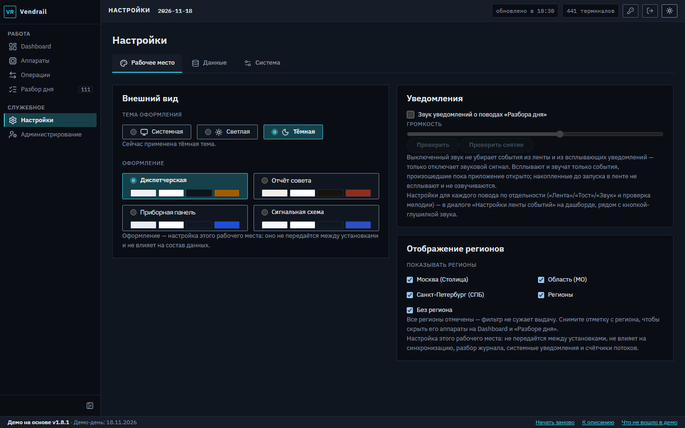

Разбор возвратов на вендинговых аппаратах
Рабочее место оператора вендинга. Vendrail собирает операции по аппаратам и помогает решить, какие возвраты и точки проверить в первую очередь.
Открыть демоДемо начинается с обучающего тура и работает на вымышленных данных.
Возможности демо
Откройте разбор дня, проверьте операции и найдите аппарат в парке.
Обзор парка
Сводка состояния аппаратов, возвратов и очереди разбора на одном экране.

Что не вошло в демо
Эти разделы и вкладки доступны в полной версии программы.
Работа со случаями
Отбор по статусу и история действий по обращению.

Плановое обслуживание
Календарь обслуживания площадок и распределение работ между техниками.

Отчёты по возвратам
Таблица возвратов по аппаратам, сводка периода и реестр обращений.

Статистика по периодам
Два диапазона дат для сравнения показателей.

Обработка таблицы
Подготовка списка точек для дальнейшей работы с данными.

Журнал аудита
Доступ к журналу действий по выбранному периоду.

Подключения, справочник и станция
Три вкладки полной версии для работы с внешними системами, справочником и параметрами станции.

За пределами тура
Настройки рабочего места и управление доступом показаны отдельными кадрами.
Настройки рабочего места
Настройки темы, оформления и звука уведомлений доступны в демо.

Сотрудники, роли и права
Управление сотрудниками, ролями и сеансами в разделе администрирования.